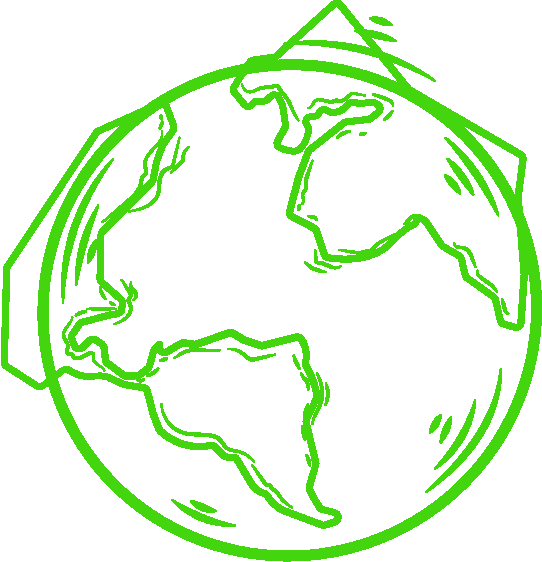

MUNDO
A importância do desenvolvimento sustentável está atrelada à necessidade de conservação
dos recursos naturais para as próximas gerações. Na atualidade, é sabido que há um grande impacto das
atividades produtivas no meio natural.
No mais, a sociedade atual está baseada no consumismo, situação que gera um alto consumo de insumos
naturais. A partir do crescimento do consumismo, a capacidade de geração de recursos naturais pelo planeta
fica comprometida, uma vez que a natureza não acompanha os níveis de consumo da sociedade. Além disso,
muitos desses recursos naturais são finitos e encontram-se amplamente impactados pelas atividades humanas,
sendo muitas vezes inutilizáveis.
No gráfico abaixo, é possível observar que a perda de florestas esta relacionada, marjoritariamente, á
extração de madeira e limpeza mecânica para o agronegócio, que vem se tornando um dos principais causadores
de problemas ambientais.
Abaixo, veja ações realizadas em alguns dos países mais sustentáveis do mundo:

Suíça:
Uma de suas inovações são as chamadas “Usinas Geotérmicas”, fontes de
energia
pouco poluentes que se utilizam do calor vindo do interior do subterrâneo para suprir o frio
constante.
Suécia:
O país recicla mais de 1,5 bilhão de garrafas e latas por ano e
apenas 1% dos 461 kg de lixo produzidos pelos suecos por ano vai parar nos aterros sanitários.
Noruega:
Cerca de 96% da eletricidade consumida é à base de energia
hidráulica, e foi o 1° país a banir o corte de árvores em 2016.
França:
O país é famoso pelo seu tradicional bonde elétrico, que substituiu
frotas de ônibus no fim da década de 90, o que diminuiu a emissão de carbono